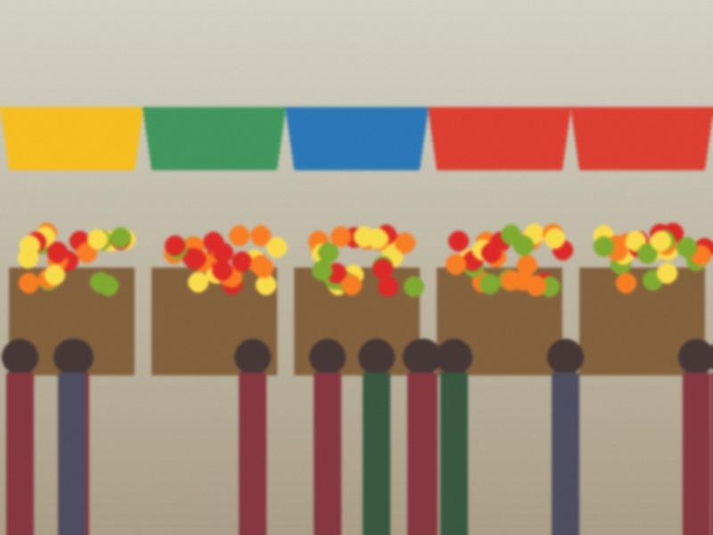

Screens that must work in the sun
31 Aug 2025 · 2 min read
My friend Bekzhan keeps cash machines alive and sent me five photos of screens that "cannot be read after 11 a.m." Direct sun at a bank machine in August turns a nice dark screen into a mirror with a few ghost words.

One of his machines, in a glass booth at the bazaar. The screen is a white rectangle with some hope on it.What we did: big black text on white, no gradients, one thick line under the button that matters. It is the ugliest screen I ever designed and it is the only one that works at noon. I put it in my portfolio, second from the top.
1 Comment
The portfolio is correct. The other one is first from the top only because it has a picture.
Comments are closed.